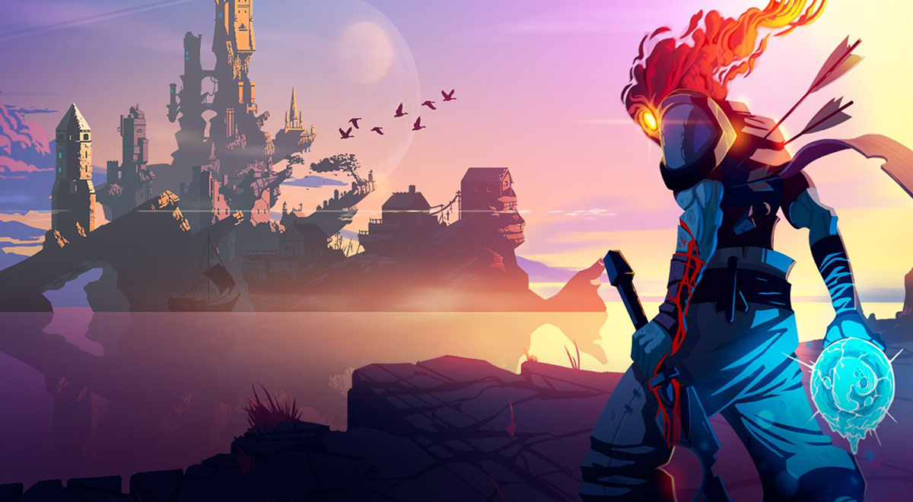

Una joya indie desarrollada en España que puedes conseguir 100% gratis para tu PC... solo hasta el 25 de noviembre
Escrito porOscar Isaac20 de noviembreSiempre es un placer conseguir juegos 100% gratis. Es algo a lo que estamos acostumbrados gracias a Epic Games Store, Steam, servicios de suscripción o incluso GOG. La plataforma de juegos de CD Projekt para PC tiene otra gran sorpresa reservada para ti.

Con motivo del Black Friday 2022, en GOG puedes disfrutar de suculentas ofertas y descuentos en juegos para PC. Se incluyen joyas de los 90 y años 2000 que no puedes conseguir en otras tiendas.
Esta semana, y solo hasta el próximo 25 de noviembre, puedes reclamar 100% gratis uno de los mejores juegos españoles de los últimos años. Además es una oda a los años 80 que encantará a los gamers nostálgicos.
Estamos hablando del reciente juego de Studio Koba (con sede en Barcelona), Narita Boy, que se convirtió en uno de los mejores indies del 2021 en PC y consolas.
Solo esta semana puedes conseguir Narita Boy 100% gratis para PC (y quedártelo para siempre) en exclusiva en GOG. Date prisa, porque dejará de estar disponible este viernes 25 de noviembre.
Narita Boy 100% gratis en GOG
Para aquellos que no lo sepan, Narita Boy fue una de las grandes sorpresas del 2021 y un inolvidable juego desarrollado en nuestro país. Tras años financiándose en kickstarter, finalmente pudo ver la luz para PS4, Xbox One, PC y Nintendo Switch.
Narita Boy es un juego de acción y plataformas 2D desarrollado por Studio Koba y editado por Team17, que recuerda muchísimo a las aventuras ochenteras y ese encantador toque arcade.
El protagonista de Narita Boy es The Creator, un desarrollador de juegos que vive una etapa de éxitos tras lanzar su consola Narita One... cuyo videojuego estrella es Narita Boy.
El problema es que el villano del juego, HIM, está saboteando el código fuente para vengarse por su muerte ''in game''. Nuestra tarea será restaurar el orden y permitir que Narita Boy siga siendo el mejor videojuego de la historia.
Que sus añejos gráficos no te engañen, pues Narita Boy es una aventura encantadora que parece sacada de una NES o una Master System. Ofrece diferentes situaciones que conquistarán a los jugadores veteranos... y podrían sorprender a los novatos.
Suena bien, ¿verdad? Pues solo hasta el 25 de noviembre puedes conseguir Narita Boy totalmente gratis para tu PC. Además, se agregará a tu biblioteca de GOG de forma permanente.
¿Quieres estrenar nuevo juego en tu PC? Pues no dudes en darle una oportunidad a Narita Boy, una nostálgica aventura 2D hecha en España y que te enganchará desde el primer segundo que pases en su meta mundo virtual. Recuerda: es 100% gratis.
Noticias relacionadas

El juego indie 'Loop Hero' se ha convertido en uno de los...

Hollow Knight: Silksong confirma su lanzamiento en PS5 y PS4
Síguenos
IndieGameplays 45.3k subs
IndieNews 780k followers
IndieGameplays 43k subs
IndieFlashNews 88k retweets

Publicidad
Post Destacados

Top 10 nuevos juegos indie para PC...
10/11/22

Estos son los juegos nominados a...
17/10/22
Silksong confirma su lanzamiento...
18/11/22